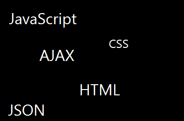

Ik doe deze opleiding met veel plezier en ik doe steeds meer ervaringen op met programmeren en projectgericht werken.
Op het moment werk ik veel met de onderstaande talen:

Ik krijg deze talen steeds meer onder de knie en hoop in de toekomst iets met deze talen te gaan doen.
Hier staan 3 opdrachten van mij die ik gemaakt heb en waar ik zelf zeer tevreden over ben.